← Videoga qaytishElonbot: bosqichma-bosqich
Animatsiyasiz o'quv qo'llanma. Akkaunt oldindan ulangan. Ma'lumotlar va yuborish natijalari shartli.
01. Bir marta tayyorlang.
E'loningizni tayyorlang. Guruhlar va vaqtni tanlang. Qolganini bot bajaradi.
02. Botni oching
@elonyuborishbot ni oching. Start tugmasini, so'ng «O'zbekcha davom etish»ni bosing.
03. Boshlashdan oldin
Bu videoda Telegram akkaunti oldindan ulangan. Keyingi qadam — guruhlarni tanlash.
04. Guruhlarni qo'shing
«Guruhlar» bo'limini oching va «Guruh qo'shish» tugmasini bosing.
05. Guruhni ulang
Qidiruvda guruhni toping. «Ulash»ni bosing. Guruhda e'lon berishga ruxsat bo'lishi kerak. So'ng botga qayting.
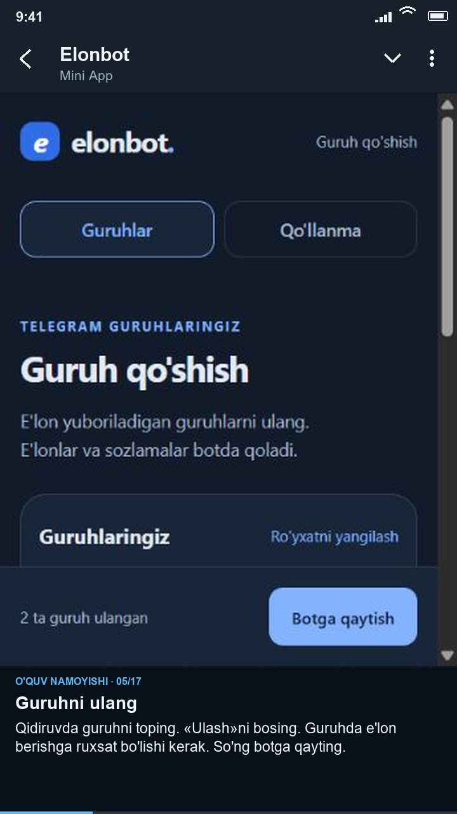
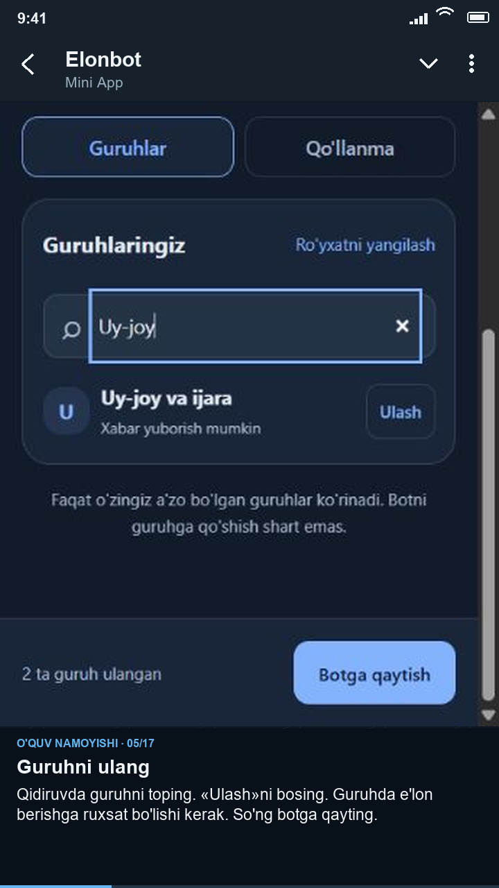
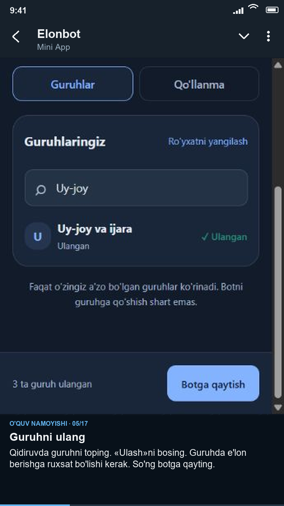
06. Yangi e'lon yarating
Botga qayting. «E'lonlarim» → «E'lon yaratish»ni tanlang.
07. E'lon matni
E'lon matni va kontaktingizni yozing. Rasmsiz variantda «Davom etish»ni bosing.
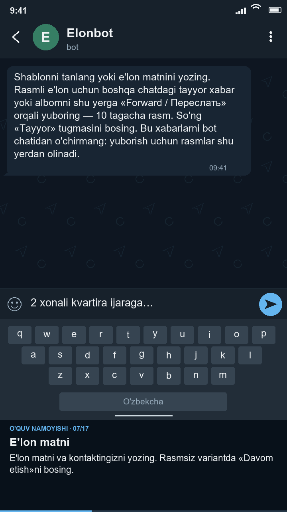
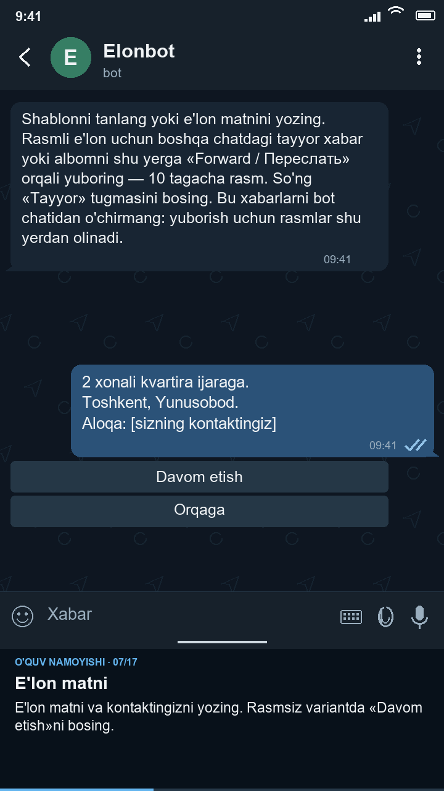
08. Tayyor albomni yo'naltiring
Tayyor albom → yo'naltirish → Elonbot. 10 tagacha rasm. Yuklanishini kutib, «Tayyor»ni bosing. Xabarlarni chatda qoldiring.
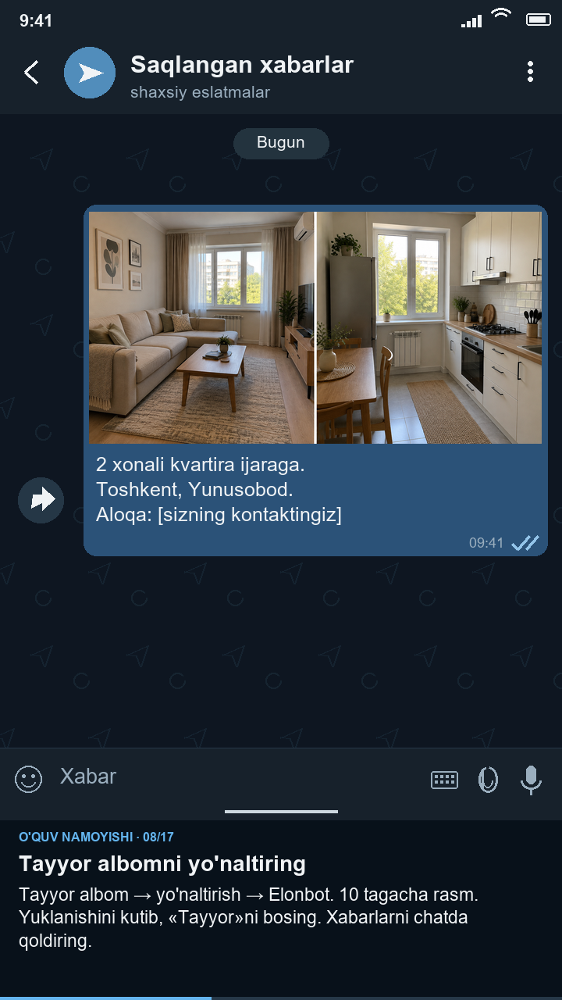
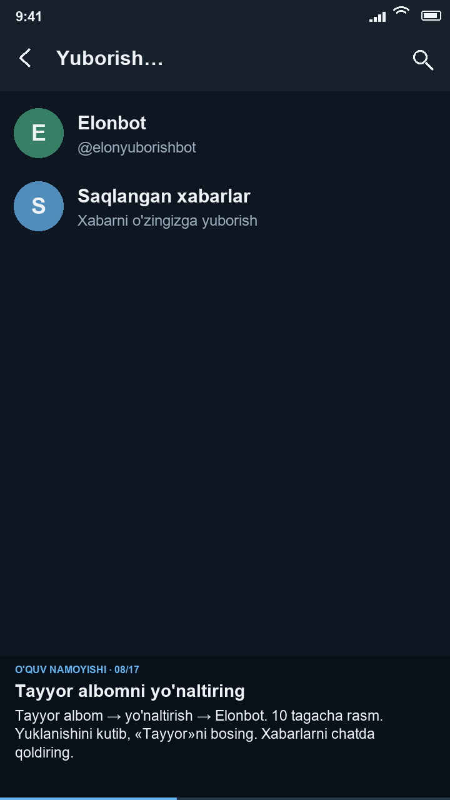
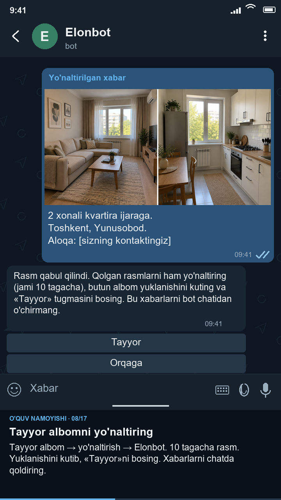
09. E'lon uchun guruhlar
Guruhlarni belgilang va «Tayyor»ni bosing. 30 — misoldagi limit; joriy limit tarifingizda ko'rsatiladi.
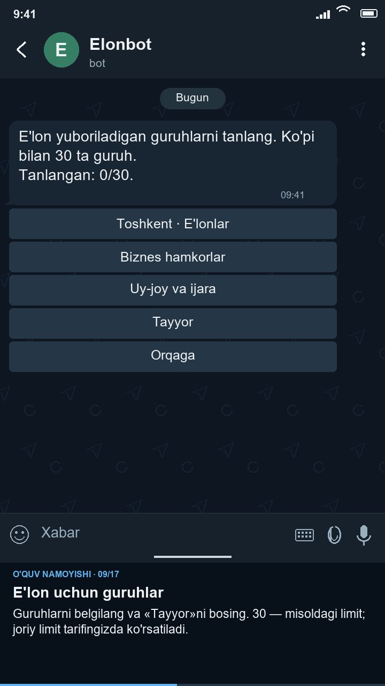
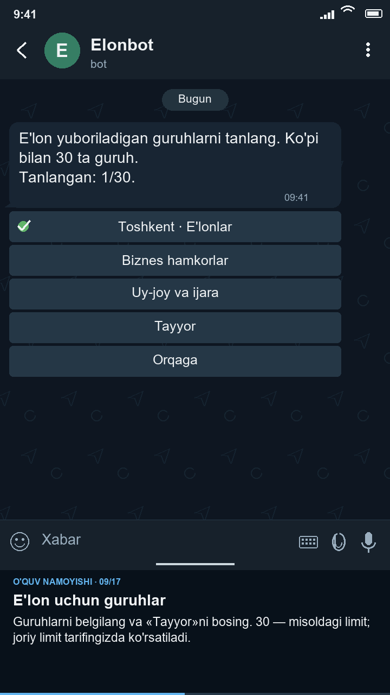
10. Takrorlash oralig'i
Yuborish oralig'ini tanlang. Misolda — 20 daqiqa. Guruh qoidalariga mos oraliqni belgilang.
11. Yuborish soatlari
Boshlanish va tugash vaqtini tanlang. Misolda: har kuni 07:00–22:00. Barcha vaqtlar Toshkent bo'yicha.
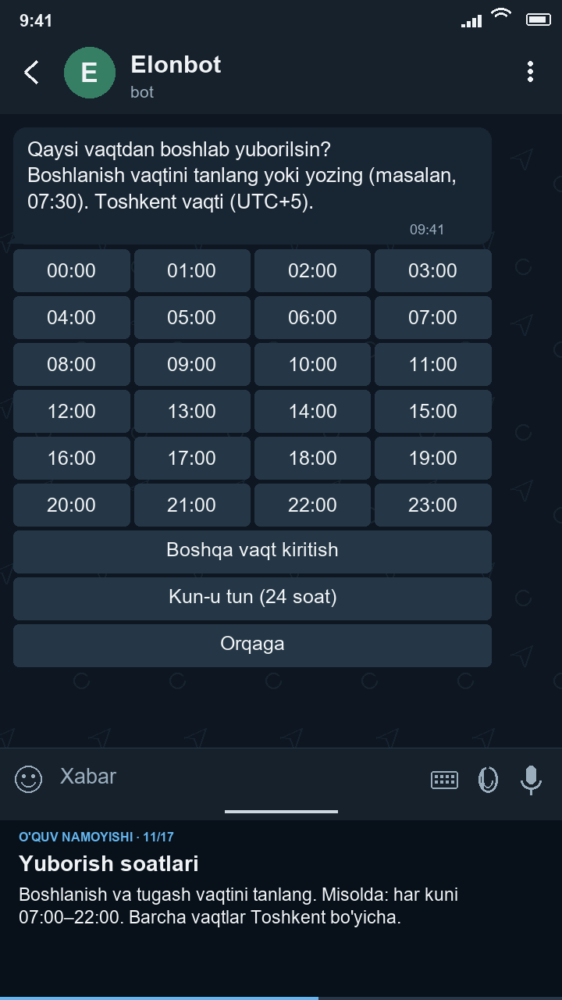
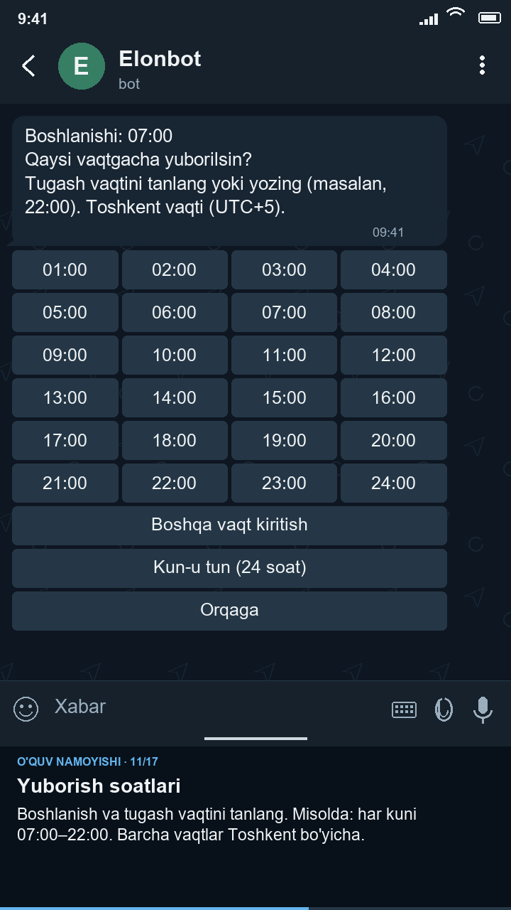
12. Birinchi yuborish
«Hozir yuborish» ham tanlangan soatlarga amal qiladi. «Jadval bo'yicha boshlash» — tanlangan oraliqdan keyin.
13. Shablon qilib saqlang
Keyin yana ishlatish uchun «Ha»ni bosing. Matn, rasmlar, guruhlar va jadval shablonda saqlanadi.
14. Tekshiring va boshlang
Matn, guruhlar va vaqtni tekshiring. Hammasi to'g'ri bo'lsa, «Ishga tushirish»ni bosing.
15. Yuborish natijasi
Natijani e'lon kartasida ko'ring. Bu yerda natijalar o'quv misoli. Telegram cheklovlari sabab yuborish kechikishi mumkin.
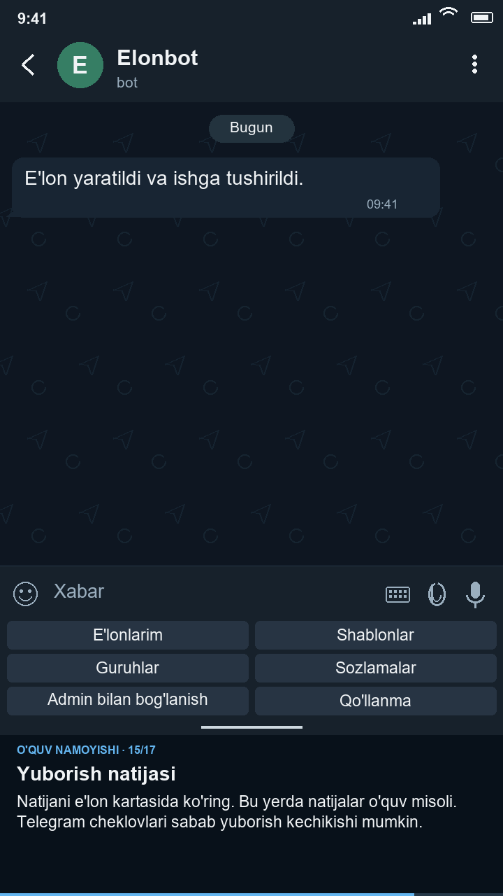
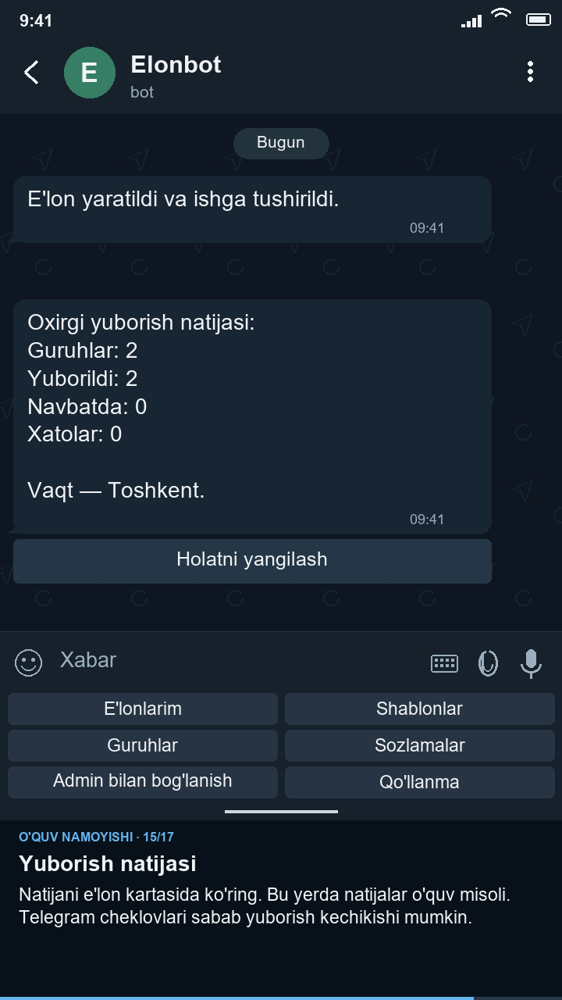
16. Yuborishni boshqaring
Vaqtincha to'xtatish uchun «To'xtatib turish»ni bosing. «Davom ettirish» bilan yana ishga tushiring.
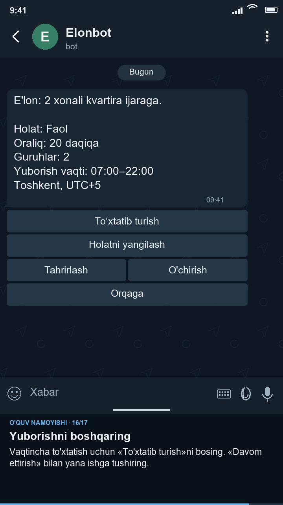
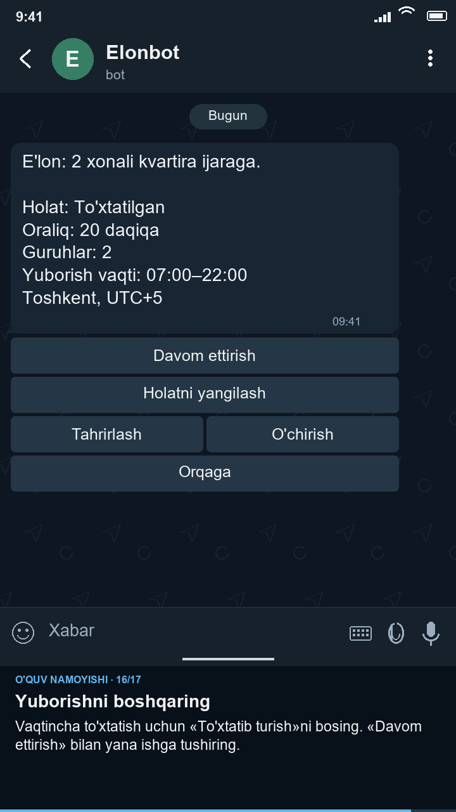
17. Tayyor. Vaqtingiz o'zingizga.
Yordam uchun «Qo'llanma» yoki /help ni oching. Oldingi bosqichga botdagi «Orqaga» tugmasi bilan qayting.